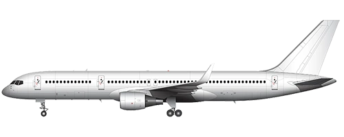

Boeing 757

757-200
757-200ER
757-300
Game Stats
Other Information
The Boeing 757 is a narrow-body, dual engine plane. This family was intended to be the replacement for the
Boeing 727
.
In-Game
The 757-200 is the most popular, with the -200ER and -300 variants having some models in circulation.
Specs
Trivia
- The majority of orders in this family come from the 757-200.
- The 757-200ER is not a new plane, but is the -200 with special permits that allows it to go farther (ETOPS).
External Links
- Boeing 757 on Wikipedia
- Manufacturer's site
- Boeing 757-200 / -200F / -300 livery templates (all include PW and RR engine options, -200 and -300 have winglet options)
Gallery
Original content from
Airline Club Wiki
. Licensed under CC-BY-SA.